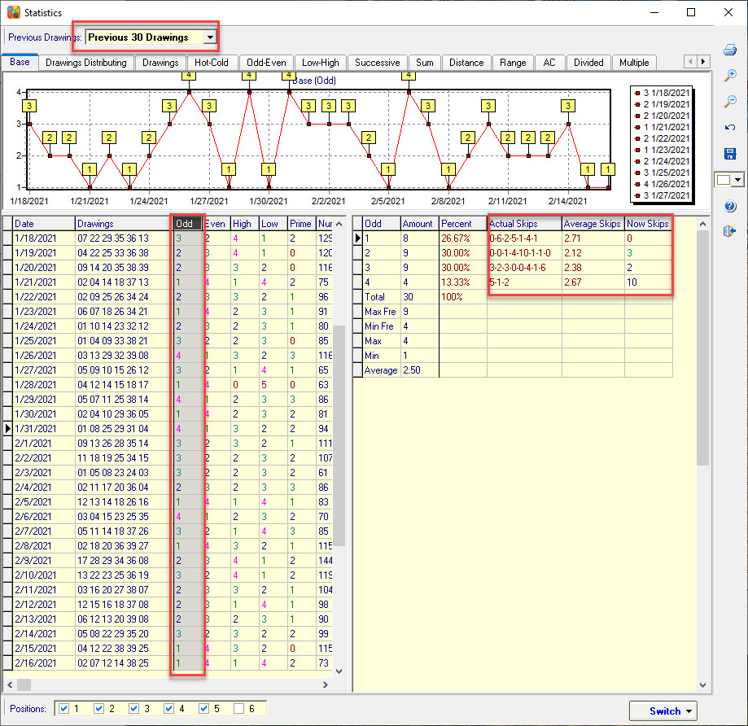

Actual Skip |
Actual Skips is a lottery filter assist function
that can help us to count the missing patterns of each value in the current
column (Actual Skips). How many times it appears on average (Average Skips) and
How many drawings have not occurred (Now Skips), this allows us to predict more
accurately and set the filter parameters. Actual Skips are also available in the
SamLoto lottery prediction algorithm and the SamP3P4 lottery prediction
algorithm, helping us to discover the prediction patterns of each lottery
algorithm.
In the statistics chart, click on each column. The program will automatically calculate Actual Skips, Average Skips, and Now Skips for the current column. SamLotto and SamP3P4 both support this feature.
How Actual Skips Works
As shown below, in the now skips
column(Odd), the Now Skips(10) indicates that the filter is due to hit because
has passed its normal skips. The Now Skips(0) number shows that the filter is
cold. it is still not suitable to play because still have more skips towards its
normal skips tendencv-see the 4 odds example above, the 4 odds filter has an
average skips of 2.67 draws and now has 10 skips since its last hit on
2/6/2021.

How Actual Skips Works
1 odds: The statistics window shows there was a hit on 2/16/2021. then it skipped 0 draws without a hit followed by a hit on 2/15/2021, then it missed 6 draws (2/8/2021). followed by 2 misses before it hit again on 2/5/2021 (see the Actual Skips above). Keep looking for numbers with an odd value of 1 like this. So, there were 7 skip periods for 1 odds, filter in our last 30 draws. The average skips are all Actual Skips values are summed and averaged, calculated like this: 0-6-2-5-1-4-1 -> 0+6+2+5+1+4+1=19/7=2.71. skips. Now has 0 missed draws.
2 odds: skip periods: 0-0-1-4-10-1-1-0 -> 2+3+1+3+4+0+0+1+1+1+0+7+2 -> average skip=24/8=2.12 skips. Now has 3 missed draws.
3 odds: 8 skip periods: 3-2-3-0-0-4-1-6 -> 3+2+3+0+0+4+1+6 -> average skip=19/8=2.38 skips. Now has 2 missed draws.
4 odds: 3 skip periods: 5-1-2 -> 5+1+2 -> average skip=8/3=2.67 skips. Now has 10 missed draws.
Home
Page: http://www.samlotto.com
Support:support@samlotto.com
Copyright: © SamLotto Lottery Software
Team All rights reserved.